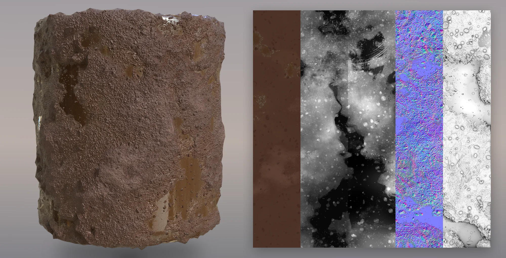
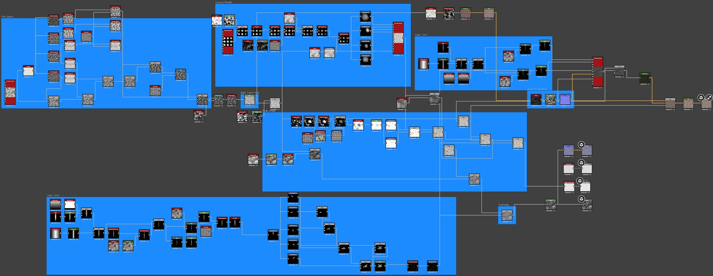
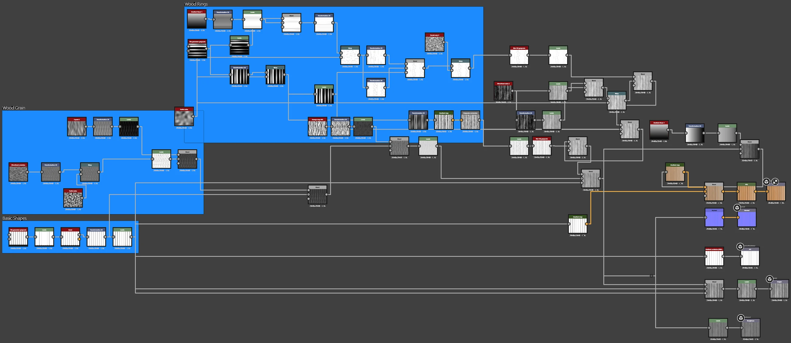

← Unreal


程序化材質
Substance Designer → Unreal Engine
四個在 Substance Designer 中完全程序化製作的材質。每一個形狀、顏色和磨損都由開放的參數控制，同一個節點圖就能變出一整組不同的外觀，再把貼圖帶進 Unreal Engine，用真實的幾何位移呈現。
4種材質
41個開放參數
2048px 貼圖解析度
5張貼圖／每個材質
參數動起來
拖動一個滑桿，整個材質就會重新生成：石塊數量、錯位、灰縫寬度、邊緣磨損和顏色，一格一格渲染出來。
自己試試看
選一個材質、選一個參數，然後拖動滑桿。每個位置都是用那個數值真實渲染出來的圓角圓柱，高度貼圖也會跟著改變，所以凹凸會一起變化。
石塊數量
Drag the slider
最終效果
Substance Designer 的 Iray 渲染，旁邊是 Base Color、Roughness、Height、Normal 和 AO 貼圖。

節點圖


Unreal 材質設定
四個材質共用一個主材質。貼圖重複次數開放成 Repeat U／V，Displacement 貼圖乘上頂點法線和 Height Intensity 參數，再接到 World Position Offset，讓每個材質實例都能調整自己的凸起深度。